quantize (lec5-6)
K-Means-based Quantization¶
将权重存储为 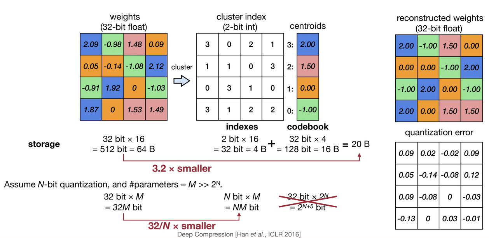
Fine-tuning Quantized Weights¶
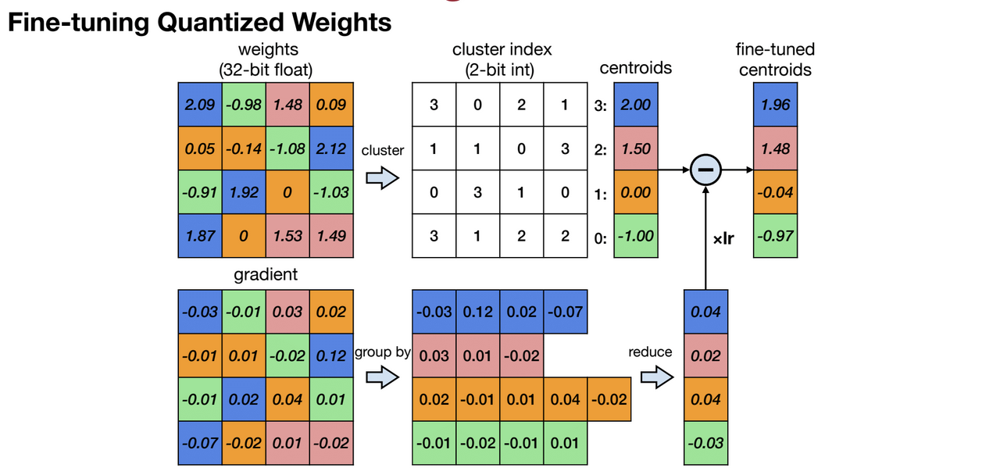
Huffman Encoding¶
- infrequent weights: use more bits to represent
- frequent weights: use less bits to represent
K-Means-based Quantization only saves storage cost, All the computation and memory access are still floating-point
Summary of deep compression¶
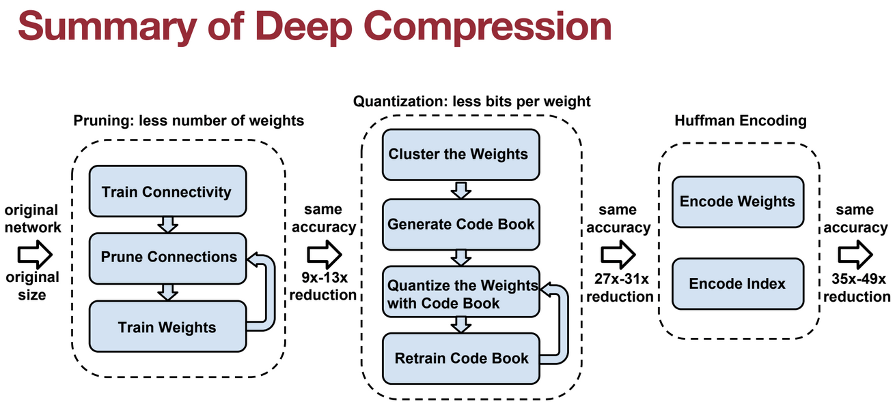
Linear Quantization¶
Linear Quantization is an affine mapping of integers to real numbers
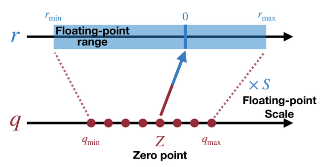
-
如何确定两个未知数Z和S？
-
已知 \(r_{\min}\), \(r_{\max}\)（原始数据）与 \(q_{\min}\), \(q_{\max}\)（量化数据），以及映射关系。
-
可以得到 \(S=(r_{\max}−r_{\min})/(q_{\max}−q_{\min})\) 与 \(Z={\rm{round}}(q_{\min}−r_{\min}/S)\)
计算Z和S
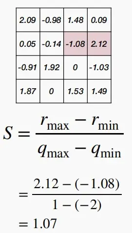 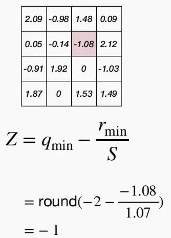
- 考虑下面的矩阵乘法 \(Y=WX\)
- 根据经验，缩放因子 \(S_WS_X/S_Y\) 总是在区间 (0,1) 内。
- \(Z_W\)是中心对称分布的，因此可以认为是0，将 \(Z_W\) 消去。
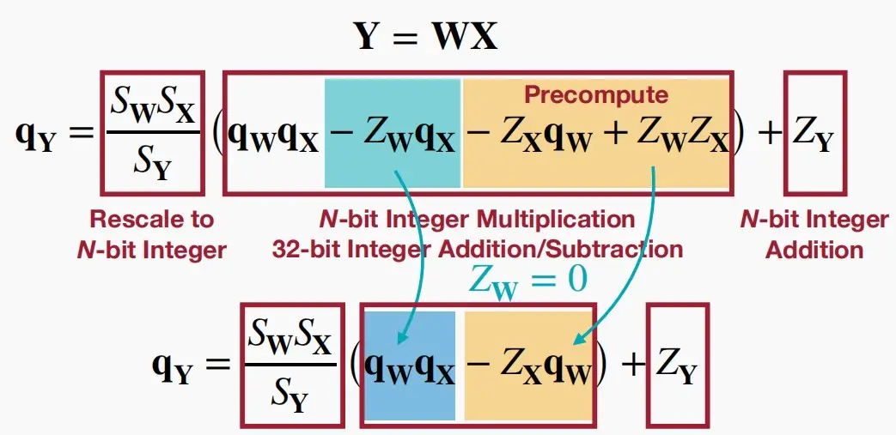
-
对于带偏置的全连接层进行线性量化 \(Y=W_X+b\)
- 由于权重对称和偏置对称，为了简化式子同样可设 \(Z_W=0\) 和 \(Z_b=0\) ,并令 \(S_b=S_WS_X\)
- 再令 \(q_{bias}=q_b−Z_Xq_W\)
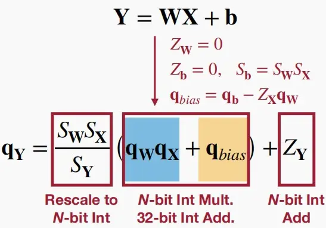
-
对于卷积层中线性量化， \(Y={\rm{Conv}}(W,X)+b\) ，简化过程类似
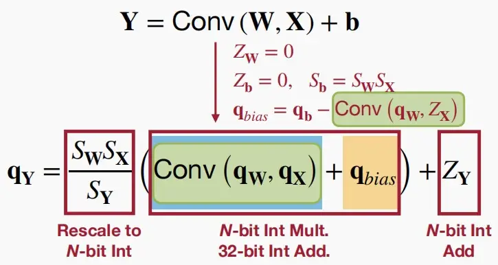
-
Post-Training Quantization(PTQ)¶
Quantization Granlularity 量化粒度¶
有以下量化粒度可选
- Per-Tensor Quantization逐向量量化
- Per-Channel Quantization逐通道量化
- Group Quantization分组量化
- Pre-Vector Quantization逐向量量化
- Shared Micro-exponent (MX) data type共享微指数
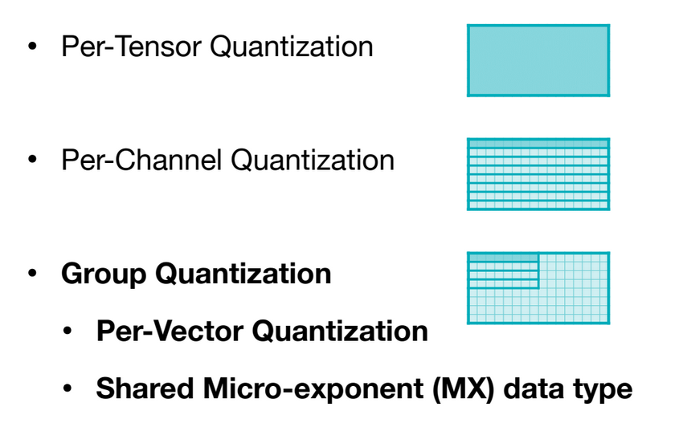
-
Per-Tensor Quantization逐张量量化
-
张量量化中，取权重的最大绝对值为 \(|r|_{\max}\)， 因此 \(|r|_{\max}=W_{\max}\)。
-
对于整个张量使用同一个缩放因子S，对于大模型比较适用，但是对于小模型会精度下降。
-
造成上述失败的原因通常是：不同输出通道的权重范围的大差异（超过100倍）。
-
解决：使用逐通道量化Per-Channel Quantization，即每个通道使用单独的缩放因子。
-
-
Per-Channel Quantization逐通道量化
- 每个通道使用单独的缩放因子。
- 优点：相比于Per-Tensor Quantization更细粒度，量化误差更小，在视觉模型中表现出色。
- 缺点：需要额外的内存来存储每个通道的缩放因子。
（注意：下图中两个Quantization矩阵有一处不一样，因为缩放因子不一样。
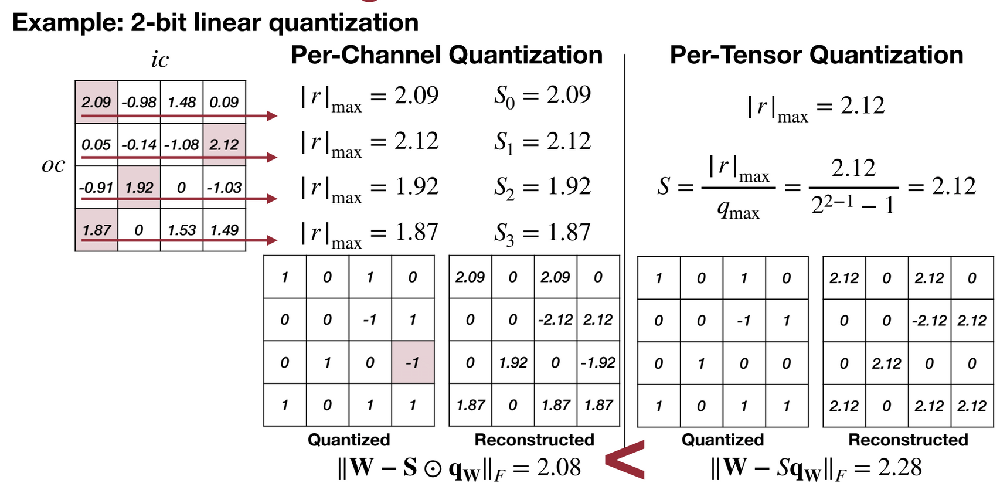
-
VS-Quant: Per-vector Scaled Quantization逐向量量化
-
分组量化是更细粒度的量化，对同一个通道里每多少个元素分组做相同的量化处理。
-
原方程 \(r=S(q−Z)\) 变为 \(r=\gamma∗S_q(q−z)\)
\(\gamma\) 是一个浮点数粗粒度缩放因子，一个张量（矩阵）共享一个 \(\gamma\) ； \(S_q\) 是一个整数缩放因子，每个向量都有一个单独的 \(S_q\)。
-
细粒度采用更便宜的整数缩放因子，而粗粒度使用更昂贵的浮点数缩放因子，以此实现精确率和硬件效率的平衡。
-
例子：如何计算存储凯开销？
给定一个4位量化，即每个量化数据元素有4位宽度。每16个元素为一组共享一个4位的缩放因子，则有效位宽度为 4+4/16=4.25 位。
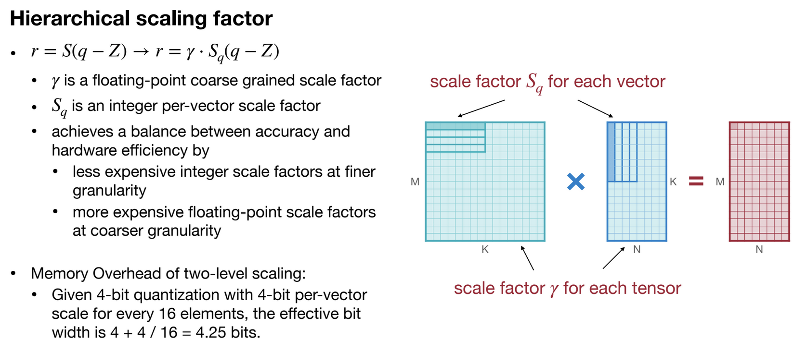
-
-
Shared Micro-exponent (MX) data type共享微指数
- 微软使用MX Data Type用于分组量化，分为MX4、MX6和MX9三种，三者尾数位不同拥有不同的精度。
- 如下图五种分组量化：
- Per-Channel Quant：使用INT4编码量化后的权重；L0 分组按通道分组且缩放因子用FP16编码。
- VSQ：使用INT4编码量化后的权重；L0 按每16个元素分组，使用UNIT4编码缩放因子；L1按通道分组，使用FP16编码缩放因子。
- MX：使用S1M2/S1M4/S1M7编码量化后的权重，其中S是符号位，M是尾数位；L0 按每2个元素分组，使用E1M0分组；L1按每16个元素分组，使用E8M0分组。
- 注意 L0 和 L1 只有指数位，L1 使用16位指数位拥有更高的动态范围。
- MX后面的数字表示有效位宽，具体计算见下图。
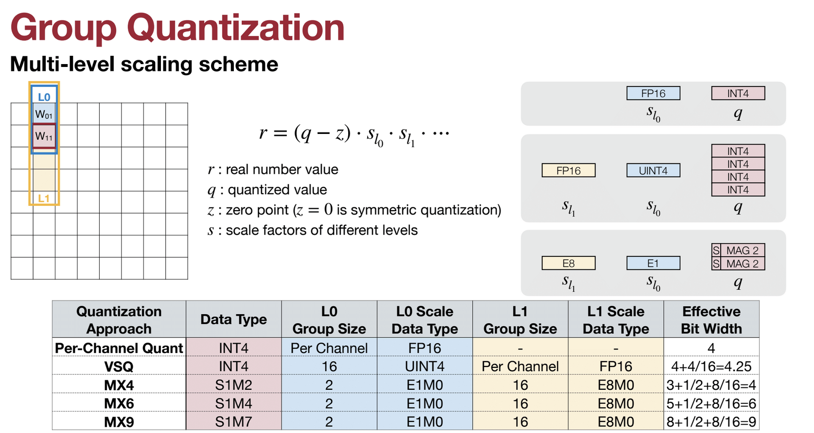
Dynamic Range Clipping动态范围裁剪¶
- 与权重不同，激活范围因输入而异。
- 要确定浮点范围，将在部署模型之前收集激活统计信息。
-
采用激活量化的时刻分为两种：
-
类型一：训练期间
- 在训练过程中跟踪指数移动平均值。
- 例如：在每个epoch结束后，检查该特定批次的 \(R_{\min}\) 和 \(R_{\max}\)，按照下列公式进行更新。经过数千个epoch后变得范围稳定平滑。
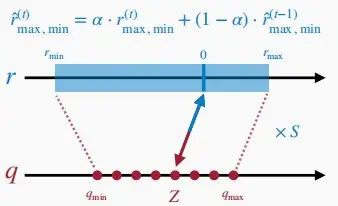
-
类型二：在运行时
- 使用少量校准数据集来确定R的最大值最小值，这种方式不需要大量的训练.
-
第一种假设激活值遵循高斯或拉普拉斯函数分布规律。最小化均方误差 \(\min_{|r|_{\max}}E[(X−Q(X))^2]\)。例如对于拉普拉斯 (0，b) 分布，最佳削波值可以数值求解为：设为 \(|r|_{\max}=2.83b,3.89b,5.03b\) 以适配 2,3,4bits 的量化。
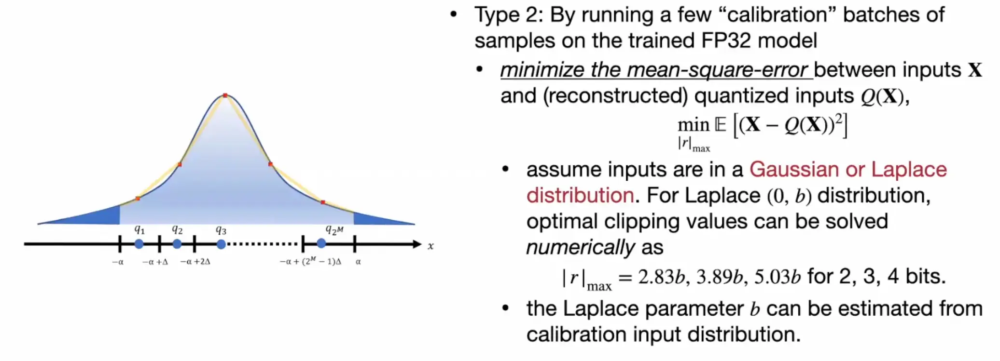
-
第二种若激活值不遵循函数分布规律。为了最小化信息损失，可以利用KL散度，因为KL散度可以测量在近似给定编码时丢失的信息量，以此来确定最佳的剪枝位置。使用KL散度进行裁剪激活量化的效果如下图：
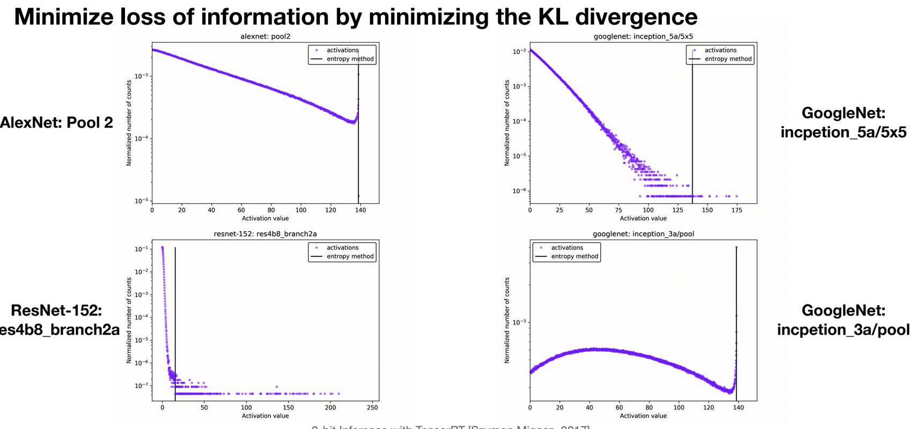
-
第三种使用Newton-Raphson方法最小化均方误差。定义MSE为目标函数，迭代不同的裁剪力度，寻找最小的均方误差。可以看到图中，随着裁剪标量的增大，MSE先减后增。
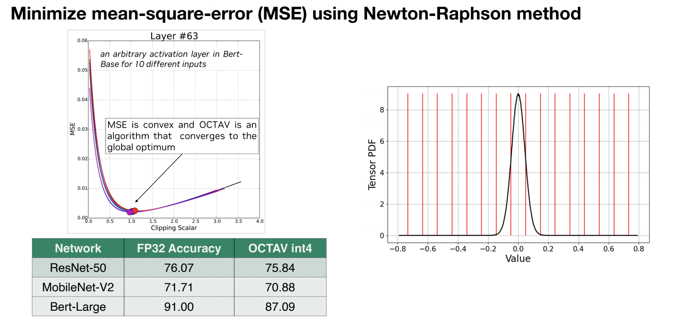
-
Rounding舍入¶
-
四舍五入(Rounding-to-nearest)
- 权重是相互关联的。对每个权值四舍五入没有考虑其他张量，因此不是整个张量的最佳舍入
-
自适应舍入(Adaptive Rounding)
- 不同于四舍五入的\(\lfloor w \rceil\)，AdaRound学习从\(\{ \lfloor w \rfloor, \lceil w \rceil\}\)中进行选择，以得到最好的重建效果。
- 采用一种基于学习的方法来寻找量化的值，\(\tilde w=\lfloor\lfloor w \rfloor+\delta\rceil, \delta\in[0,1]\)
- 在自适应舍入中，不在意单个权重，通过权重输出的差异来衡量舍入的影响设计了以下方程：
- 其中x是该层的输入，V是相同形状的随机变量。
- h()是一个映射到(0,1)的函数，类似于sigmoid函数。
- freg(V) 是正则化项，鼓励 h(V) 二分，即鼓励 h(V) 输出0或1。
\[ \arg\min_V||W_x−\lfloor\lfloor W\rfloor+h(V)\rceil x||^2_F+\lambda f_{reg}(V) \]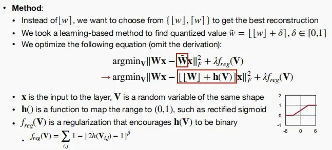
Quantization-Aware Training (QAT)量化感知训练¶
-
通常情况下，如果直接量化一个模型，其精度将会下降。QAT在训练过程中模拟量化的效果（伪量化因子），使得模型能够适应量化带来的信息损失，恢复精度损失。
-
对预先训练的浮点模型进行微调比从头开始训练提供更好的精度。
“又可称之为在线量化。QAT和PTQ最大的区别是QAT需要数据训练，可以理解为拿着训练好的模型又做了一次微调。而PTQ只是拿少量校准数据调整一些参数。PTQ的优点就是很快，缺点就是还是有一些精度损失，效果不如QAT算法。为了降低量化后准确率的损失，不少方法会在训练时引入量化操作，让量化之后的权重和激活值去参与网络的训练，这种方式称之为量化感知训练即QAT。”
-
模拟量化：在模型的前向传播过程中，将权重和激活值通过量化和反量化的过程，模拟量化在实际部署中的效果，即权重和激活值先被量化到低位宽的整数表示，然后再被反量化回浮点数。在前向传播时权重会被量化为8位整数，但在反向传播时仍然使用原始的浮点数进行梯度计算，使得模型在训练过程中“感知”到量化所带来的误差。
-
反向传播调整：在反向传播过程中，假量化节点会计算量化误差，并将其纳入到梯度计算中。这样，模型的权重会逐渐调整，以适应量化后的表现。
Straight-Through Estimator (STE)¶
- 在神经网络训练中，反向传播算法依赖于链式法则，需要对损失函数相对于每一层参数进行梯度计算。然而，量化函数通常是不可微的（例如取整函数），这就使得直接计算梯度变得困难。因此，STE 被引入来解决这个问题。
- STE 的核心思想：在前向传播过程中使用实际的量化函数，而在反向传播过程中，通过一种近似方法来计算梯度，从而使训练过程能够顺利进行。
- 在反向传播过程中，STE 近似地将量化函数的梯度视为恒等函数的梯度（原本量化函数的梯度应该是恒为0）。这意味着，虽然前向传播使用了量化函数，但在反向传播时，我们假设量化函数对输入的梯度为1。
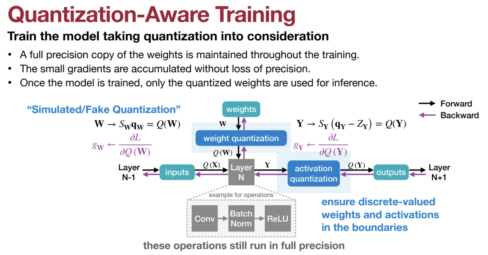
如下图，经过QAT后准确率提升效果显著。尤其是对于Per-Tensor经过QAT后准确率从0.1%提升至70%。
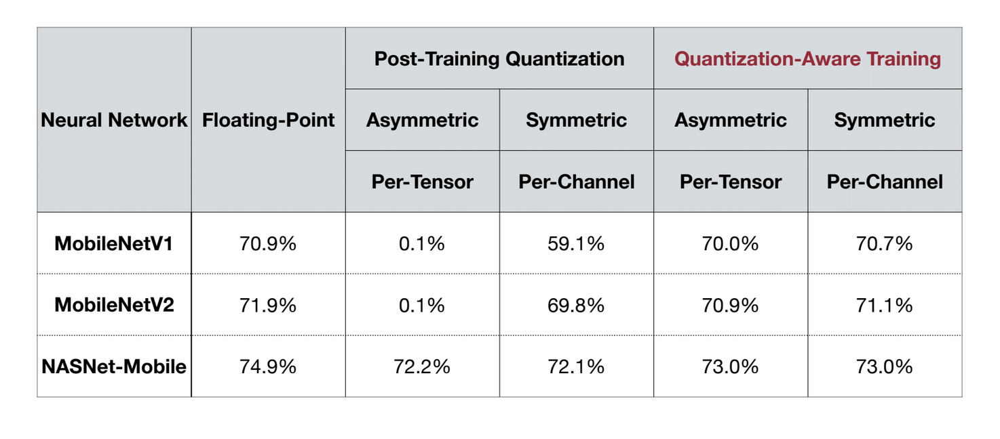